Nos Capítulos 4 e 5, consideramos relações entre duas variáveis quantitativas.
Neste capítulo, usaremos tabelas de dupla entrada para descrevermos relações entre duas variáveis categóricas. Algumas variáveis – tais como gênero, raça e ocupação – são categóricas por natureza. Outras variáveis categóricas são criadas pelo agrupamento em classes dos valores de uma variável quantitativa.
Para explorar relações entre duas variáveis categóricas, usamos as contagens ou percentuais de indivíduos que se encaixam nas várias categorias.
Assim como com variáveis quantitativas, devemos estar alertas para a influência de variáveis ocultas, e tomar cuidado para não assumirmos que os padrões que observamos continuem a valer para dados adicionais ou em um contexto mais amplo. (MOORE; NOTZ; FLIGNER, 2023 , p. 130).
Código
```{r}library(tidyverse)library(NHANES)library(cowplot)library(mapproj)library(pander)library(knitr)library(modelr)panderOptions('round',2)panderOptions('digits',7)theme_set(theme_minimal(base_size =14))options(digits =2)set.seed(123456) # set random seed to exactly replicate results```
7.1 Objetivos da Aprendizagem
Após ler este capítulo, você deve ser capaz de:
▶ 6.1 Calcular e interpretar distribuições marginais em tabelas de dupla entrada.
▶6.2 Calcular e interpretar distribuições condicionais em tabelas de dupla entrada.
Em 2017, o órgão norte-americano National Center for Education Statistics fez uma projeção do número de graus acadêmicos a serem dados em 2020 e 2021 para homens e mulheres. A Tabela 6.1 mostra suas projeções.1 Essa é uma tabela de dupla entrada porque descreve duas variáveis categóricas. Uma é o sexo de um indivíduo. A outra é o grau acadêmico recebido. Sexo é a variável linha porque cada linha na tabela descreve o sexo de um indivíduo. Grau acadêmico conferido é a variável coluna porque cada coluna descreve um grau. Como o grau acadêmico conferido tem uma ordem natural, desde “Associado” a “Doutor”, as colunas estão nessa ordem. As entradas na tabela são as contagens de indivíduos (em milhares) em cada classe de sexo por grau acadêmico.
As entradas na margem direita são os totais das entradas das linhas, as entradas na margem inferior são os totais das entradas das colunas, e a entrada embaixo à direita é o total de todos os estudantes previstos para receberem um grau acadêmico no período de 2020 e 2021.
Código
```{r}# Graus acadêmicos por sexo (com ordem explícita dos fatores)grausex <-data.frame(sex =factor(c(rep("M", 2283), rep("H", 1622)),levels =c("M", "H")),grau =factor(c(rep("ass", 639), rep("bach", 1087), rep("ms", 460), rep("dr", 97),rep("ass", 402), rep("bach", 804), rep("ms", 329), rep("dr", 87)),levels =c("ass", "bach", "ms", "dr")))# tabela multiway do data.frame (mantém a ordem dos níveis)table(grausex)```
grau
sex ass bach ms dr
M 639 1087 460 97
H 402 804 329 87
Acrescentar os totais marginais de linhas e de colunas.
Código
```{r}# Tabela de contingência (linhas = sexo, colunas = grau)tab <-table(grausex$sex, grausex$grau)# Adicionar totais marginais (linha e coluna)tab_totais <-addmargins(tab)# Substituir o rótulo padrão "Sum" por "Total" nas margens (mais legível em pt-BR)rownames(tab_totais)[nrow(tab_totais)] <-"Total"colnames(tab_totais)[ncol(tab_totais)] <-"Total"# Exibir tabela com totais marginaiscat("\nTabela com totais marginais:\n")print(tab_totais)# Exemplo: acessar apenas totais de linha ou coluna (se precisar)# margin.table(tab, 1) # totais por grau (linhas)# margin.table(tab, 2) # totais por sexo (colunas)```
Tabela com totais marginais:
ass bach ms dr Total
M 639 1087 460 97 2283
H 402 804 329 87 1622
Total 1041 1891 789 184 3905
Tabela de dupla entrada
Uma tabela de contagens usada para a organização de dados sobre duas variáveis categóricas.
Valores de cada variável linha percorrem horizontalmente a tabela, e valores de cada variável coluna percorrem a tabela verticalmente.
Entradas na tabela são as contagens da frequência em que cada combinação da linha e da coluna correspondentes ocorre.
Tabelas de dupla entrada são usadas, em geral, para o resumo de grandes quantidades de informação por meio do agrupamento das observações em categorias.
7.2 Distribuições Marginais
Como podemos apreender a informação contida na Tabela 6.1? Primeiro, olhe a distribuição de cada variável separadamente. A distribuição de uma variável categórica diz com que frequência cada resultado ocorreu. A coluna “Total” à direita da tabela contém os totais para as linhas. Esses totais de linhas mostram a distribuição de sexo no grupo inteiro de 3.905 mil estudantes: 2.283 mil são mulheres, e 1.622 mil são homens.
Se os totais de linhas e de colunas estiverem ausentes, a primeira coisa a fazer no estudo de uma tabela de dupla entrada é calcular esses totais. As distribuições de sexo apenas e de grau conferido apenas são chamadas distribuições marginais, porque elas aparecem nas margens direita e inferior da tabela de dupla entrada.
Distribuições marginais
A distribuição marginal de uma das variáveis categóricas em uma tabela de dupla entrada de contagens é a distribuição dos valores daquela variável entre todos os indivíduos descritos pela tabela.
Porcentagens são, em geral, mais informativas do que contagens.
Podemos apresentar a distribuição marginal de sexo em porcentagens, dividindo cada total de linha pelo total da tabela e convertendo para uma porcentagem. (MOORE; NOTZ; FLIGNER, 2023 , p. 131).
7.2.1 Exemplo 6.2 Cálculo de uma distribuição marginal
Código
```{r}# --- Marginais em contagem ---# Totais por linha (por sexo)margem_linhas <-margin.table(tab, 1)# Totais por coluna (por grau)margem_colunas <-margin.table(tab, 2)cat("\nMarginal — por sexo (contagem):\n")print(margem_linhas)cat("\nMarginal — por grau (contagem):\n")print(margem_colunas)# --- Marginais em proporção (relativas ao total geral) ---prop_linhas <-prop.table(margem_linhas) # soma = 1prop_colunas <-prop.table(margem_colunas) # soma = 1cat("\nMarginal — por sexo (proporção % do total):\n")print(round(100* prop_linhas, 2))cat("\nMarginal — por grau (proporção % do total):\n")print(round(100* prop_colunas, 2))# --- Proporções condicionais e por célula ---prop_celula_total <-prop.table(tab) # cada célula / total geralprop_cond_linha <-prop.table(tab, 1) # cada linha soma 1 (condicional por sexo)prop_cond_coluna <-prop.table(tab, 2) # cada coluna soma 1 (condicional por grau)cat("\nProporção de cada célula em relação ao total (em %):\n")print(round(100* prop_celula_total, 2))cat("\nProporção condicional por sexo (cada linha soma 100%):\n")print(round(100* prop_cond_linha, 2))cat("\nProporção condicional por grau (cada coluna soma 100%):\n")print(round(100* prop_cond_coluna, 2))# --- Data.frames resumidos para relatório ---resumo_sexo <-data.frame(sexo =names(margem_linhas),contagem =as.integer(margem_linhas),proporcao_total =round(as.numeric(prop_linhas), 4))resumo_grau <-data.frame(grau =names(margem_colunas),contagem =as.integer(margem_colunas),proporcao_total =round(as.numeric(prop_colunas), 4))cat("\nResumo por sexo (contagem + proporção do total):\n")print(resumo_sexo)cat("\nResumo por grau (contagem + proporção do total):\n")print(resumo_grau)```
Marginal — por sexo (contagem):
M H
2283 1622
Marginal — por grau (contagem):
ass bach ms dr
1041 1891 789 184
Marginal — por sexo (proporção % do total):
M H
58 42
Marginal — por grau (proporção % do total):
ass bach ms dr
26.7 48.4 20.2 4.7
Proporção de cada célula em relação ao total (em %):
ass bach ms dr
M 16.4 27.8 11.8 2.5
H 10.3 20.6 8.4 2.2
Proporção condicional por sexo (cada linha soma 100%):
ass bach ms dr
M 28.0 47.6 20.1 4.2
H 24.8 49.6 20.3 5.4
Proporção condicional por grau (cada coluna soma 100%):
ass bach ms dr
M 61 57 58 53
H 39 43 42 47
Resumo por sexo (contagem + proporção do total):
sexo contagem proporcao_total
1 M 2283 0.58
2 H 1622 0.42
Resumo por grau (contagem + proporção do total):
grau contagem proporcao_total
1 ass 1041 0.267
2 bach 1891 0.484
3 ms 789 0.202
4 dr 184 0.047
Cada distribuição marginal de uma tabela de dupla entrada é uma distribuição para uma única variável categórica. Como vimos no Capítulo 1, podemos usar um gráfico de barras ou um gráfico de setores para apresentar essa distribuição. A Figura 6.1 é um gráfico de barras da distribuição de sexo entre os estudantes na amostra.
Ao trabalhar com uma tabela de dupla entrada, você deve calcular muitos percentuais. Aqui está uma sugestão para ajudá-lo a decidir qual fração dá o percentual que você deseja. Pergunte-se: “qual grupo representa o total do qual eu desejo uma porcentagem?” A contagem para esse grupo é o denominador da fração que leva à porcentagem. No Exemplo 6.2, desejamos a porcentagem “de estudantes”, de modo que a contagem de estudantes (o total da tabela) é o denominador.
Código
```{r}# Pacotes necessários (instala se não existir)if (!requireNamespace("ggplot2", quietly =TRUE)) install.packages("ggplot2")if (!requireNamespace("scales", quietly =TRUE)) install.packages("scales")library(ggplot2)library(scales)# --- Gráfico de barras para 'sexo' (contagem) ---tab_sexo <-as.data.frame(table(grausex$sex))names(tab_sexo) <-c("sexo", "contagem")tab_sexo$proporcao <- tab_sexo$contagem /sum(tab_sexo$contagem)p_sexo <-ggplot(tab_sexo, aes(x = sexo, y = contagem, fill = sexo)) +geom_col(show.legend =FALSE) +geom_text(aes(label = contagem), vjust =-0.4) +labs(title ="Contagem por sexo", x ="Sexo", y ="Contagem") +theme_minimal()# Exibirprint(p_sexo)# ggsave("barra_sexo_contagem.png", p_sexo, width = 6, height = 4)# --- Gráfico de barras para 'sexo' (proporção) ---p_sexo_prop <-ggplot(tab_sexo, aes(x = sexo, y = proporcao, fill = sexo)) +geom_col(show.legend =FALSE) +geom_text(aes(label =percent(proporcao, accuracy =0.1)), vjust =-0.4) +scale_y_continuous(labels =percent_format(accuracy =1)) +labs(title ="Proporção por sexo", x ="Sexo", y ="Proporção") +theme_minimal()print(p_sexo_prop)# ggsave("barra_sexo_proporcao.png", p_sexo_prop, width = 6, height = 4)# --- Gráfico de barras para 'grau' (contagem) ---tab_grau <-as.data.frame(table(grausex$grau))names(tab_grau) <-c("grau", "contagem")tab_grau$proporcao <- tab_grau$contagem /sum(tab_grau$contagem)p_grau <-ggplot(tab_grau, aes(x = grau, y = contagem, fill = grau)) +geom_col(show.legend =FALSE) +geom_text(aes(label = contagem), vjust =-0.4) +labs(title ="Contagem por grau acadêmico", x ="Grau", y ="Contagem") +theme_minimal()print(p_grau)# ggsave("barra_grau_contagem.png", p_grau, width = 7, height = 4)# --- Gráfico de barras para 'grau' (proporção) ---p_grau_prop <-ggplot(tab_grau, aes(x = grau, y = proporcao, fill = grau)) +geom_col(show.legend =FALSE) +geom_text(aes(label =percent(proporcao, accuracy =0.1)), vjust =-0.4) +scale_y_continuous(labels =percent_format(accuracy =1)) +labs(title ="Proporção por grau acadêmico", x ="Grau", y ="Proporção") +theme_minimal()print(p_grau_prop)# ggsave("barra_grau_proporcao.png", p_grau_prop, width = 7, height = 4)```
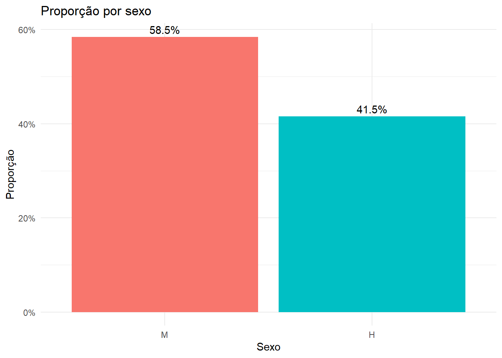
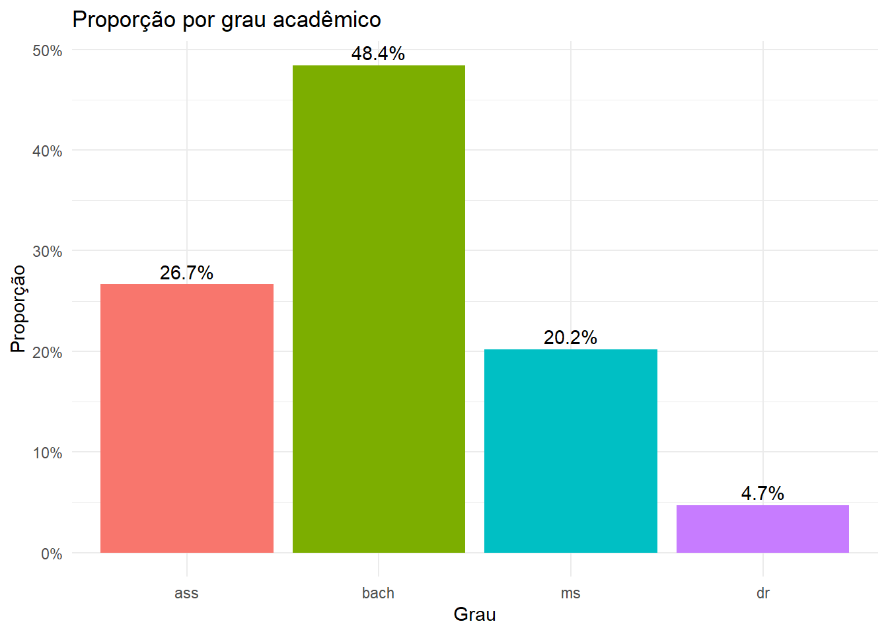
7.2.2 Aplique seu conhecimento
7.2.2.1 6.1 Videogames e conceitos.
A popularidade do computador, vídeo, internet e de jogos de realidade virtual tem aumentado a preocupação sobre sua capacidade de impactar negativamente a juventude. Os dados neste exercício se baseiam em pesquisa recente com alunos do Ensino Médio com idade entre 14 a 18 anos, em escolas de Connecticut. Eis as distribuições das notas dos meninos que jogaram e que não jogaram videogame.
Código
```{r}# Tabela de contingência: Conceito x Jogaram videogame# Linhas: status (Jogaram / Nunca jogaram)# Colunas: Conceito (As e Bs, Cs, Ds e Fs)# Montar matriz com os dados (cada linha corresponde a um status)# Linha 1 = "Jogaram videogame": 736, 450, 193# Linha 2 = "Nunca jogaram videogame": 205, 144, 80counts <-matrix(c(736, 450, 193,205, 144, 80),nrow =2,byrow =TRUE)dimnames(counts) <-list(Status =c("Jogaram videogame", "Nunca jogaram videogame"),Conceito =c("As e Bs", "Cs", "Ds e Fs"))# Converter para objeto table (mantém dimnames)tab <-as.table(counts)# Exibir tabela originalcat("Tabela de contingência (contagens):\n")print(tab)```
Tabela de contingência (contagens):
Conceito
Status As e Bs Cs Ds e Fs
Jogaram videogame 736 450 193
Nunca jogaram videogame 205 144 80
(a) Quantas pessoas essa tabela descreve? Quantas delas jogaram videogame?
(b) Dê a distribuição marginal dos conceitos. Qual percentual dos meninos representados na tabela teve conc eito C ou menos?
Código
```{r}# Adicionar totais marginais (linha e coluna) e renomear para "Total"tab_totais <-addmargins(tab)rownames(tab_totais)[nrow(tab_totais)] <-"Total"colnames(tab_totais)[ncol(tab_totais)] <-"Total"cat("\nTabela com totais marginais:\n")print(tab_totais)# --- Marginais em contagem ---margem_status <-margin.table(tab, 1) # totais por status (linhas)margem_conceito <-margin.table(tab, 2) # totais por conceito (colunas)cat("\nMarginal — por status (contagem):\n")print(margem_status)cat("\nMarginal — por conceito (contagem):\n")print(margem_conceito)# --- Marginais em proporção (relativas ao total geral) ---prop_status <-prop.table(margem_status) # soma = 1prop_conceito <-prop.table(margem_conceito)cat("\nMarginal — por status (porcentagem do total):\n")print(round(100* prop_status, 2))cat("\nMarginal — por conceito (porcentagem do total):\n")print(round(100* prop_conceito, 2))# --- Proporções por célula e condicionais ---prop_celula_total <-prop.table(tab) # cada célula / total geralprop_cond_status <-prop.table(tab, 1) # condicional por linha (status)prop_cond_conceito <-prop.table(tab, 2)# condicional por coluna (conceito)cat("\nProporção de cada célula em relação ao total (em %):\n")print(round(100* prop_celula_total, 2))cat("\nProporção condicional por status (cada linha = 100%):\n")print(round(100* prop_cond_status, 2))cat("\nProporção condicional por conceito (cada coluna = 100%):\n")print(round(100* prop_cond_conceito, 2))# --- Data.frames resumidos (para relatório/exportação) ---resumo_status <-data.frame(status =names(margem_status),contagem =as.integer(margem_status),proporcao_total =round(as.numeric(prop_status), 4),porcentagem =round(100*as.numeric(prop_status), 2))resumo_conceito <-data.frame(conceito =names(margem_conceito),contagem =as.integer(margem_conceito),proporcao_total =round(as.numeric(prop_conceito), 4),porcentagem =round(100*as.numeric(prop_conceito), 2))cat("\nResumo por status:\n")print(resumo_status)cat("\nResumo por conceito:\n")print(resumo_conceito)```
Tabela com totais marginais:
Conceito
Status As e Bs Cs Ds e Fs Total
Jogaram videogame 736 450 193 1379
Nunca jogaram videogame 205 144 80 429
Total 941 594 273 1808
Marginal — por status (contagem):
Status
Jogaram videogame Nunca jogaram videogame
1379 429
Marginal — por conceito (contagem):
Conceito
As e Bs Cs Ds e Fs
941 594 273
Marginal — por status (porcentagem do total):
Status
Jogaram videogame Nunca jogaram videogame
76 24
Marginal — por conceito (porcentagem do total):
Conceito
As e Bs Cs Ds e Fs
52 33 15
Proporção de cada célula em relação ao total (em %):
Conceito
Status As e Bs Cs Ds e Fs
Jogaram videogame 40.7 24.9 10.7
Nunca jogaram videogame 11.3 8.0 4.4
Proporção condicional por status (cada linha = 100%):
Conceito
Status As e Bs Cs Ds e Fs
Jogaram videogame 53 33 14
Nunca jogaram videogame 48 34 19
Proporção condicional por conceito (cada coluna = 100%):
Conceito
Status As e Bs Cs Ds e Fs
Jogaram videogame 78 76 71
Nunca jogaram videogame 22 24 29
Resumo por status:
status contagem proporcao_total porcentagem
1 Jogaram videogame 1379 0.76 76
2 Nunca jogaram videogame 429 0.24 24
Resumo por conceito:
conceito contagem proporcao_total porcentagem
1 As e Bs 941 0.52 52
2 Cs 594 0.33 33
3 Ds e Fs 273 0.15 15
Olhando para as saídas acima, temos as respostas.
(a) Total de pessoas descritas pela tabela: 1808
Total de pessoas que jogaram videogame: 1379
(b) A partir da distribuição marginal dos conceitos, o percentual de meninos com conceito C ou menos é: 32,85% + 15,10% = 47,96%.
Ou seja, a maioria dos meninos que jogam videogame apresentam conceito A ou B: 52,05%.
7.2.2.2 6.2 Idades de Universitários.
Eis uma tabela de dupla entrada de dados do U.S. Census Bureau que descreve a idade e o gênero de todos os alunos universitários americanos. As entradas na tabela são contagens em milhares de estudantes.
Código
```{r}# Montar tabela Faixa etária x Sexo# Linhas: faixas etárias (na ordem desejada)# Colunas: Mulher, Homemcounts <-matrix(c(2348, 1831, # 15 a 19 anos: Mulher, Homem4280, 3713, # 20 a 24 anos2166, 1714, # 25 a 34 anos1492, 853# 35 anos ou mais ),nrow =4,byrow =TRUE)rownames(counts) <-c("15 a 19 anos", "20 a 24 anos", "25 a 34 anos", "35 anos ou mais")colnames(counts) <-c("Mulher", "Homem")# Converter para objeto table (mantém dimnames)tab_faixa <-as.table(counts)# Exibir tabela originalcat("Tabela Faixa etária x Sexo (contagens):\n")print(tab_faixa)```
Tabela Faixa etária x Sexo (contagens):
Mulher Homem
15 a 19 anos 2348 1831
20 a 24 anos 4280 3713
25 a 34 anos 2166 1714
35 anos ou mais 1492 853
(a) Há quantos alunos universitários?
(b) Encontre a distribuição marginal das faixas etárias. Qual percentual de universitários está na faixa etária de 20 a 24 anos?
Código
```{r}# Adicionar totais marginais (linhas e colunas)tab_com_totais <-addmargins(tab_faixa)# Renomear as margens para "Total" (substitui o rótulo padrão)rownames(tab_com_totais)[nrow(tab_com_totais)] <-"Total"colnames(tab_com_totais)[ncol(tab_com_totais)] <-"Total"cat("\nTabela com totais marginais:\n")print(tab_com_totais)# Marginais em contagemtotais_por_faixa <-margin.table(tab_faixa, 1) # soma por linha (faixa etária)totais_por_sexo <-margin.table(tab_faixa, 2) # soma por coluna (sexo)cat("\nTotais por faixa etária:\n"); print(totais_por_faixa)cat("\nTotais por sexo:\n"); print(totais_por_sexo)# Proporçõesprop_total <-prop.table(tab_faixa) # cada célula / total geralprop_por_faixa <-prop.table(tab_faixa, 1) # condicional por faixa (linhas somam 1)prop_por_sexo <-prop.table(tab_faixa, 2) # condicional por sexo (colunas somam 1)cat("\nProporção de cada célula em relação ao total (em %):\n")print(round(100* prop_total, 2))# Converter para data.frame em formato "long" (útil para ggplot2 ou export)df_long <-as.data.frame(tab_faixa)names(df_long) <-c("faixa_etaria", "sexo", "contagem")cat("\nData.frame (long) pronto para plotagem/exportação:\n")print(df_long)```
Tabela com totais marginais:
Mulher Homem Total
15 a 19 anos 2348 1831 4179
20 a 24 anos 4280 3713 7993
25 a 34 anos 2166 1714 3880
35 anos ou mais 1492 853 2345
Total 10286 8111 18397
Totais por faixa etária:
15 a 19 anos 20 a 24 anos 25 a 34 anos 35 anos ou mais
4179 7993 3880 2345
Totais por sexo:
Mulher Homem
10286 8111
Proporção de cada célula em relação ao total (em %):
Mulher Homem
15 a 19 anos 12.8 9.9
20 a 24 anos 23.3 20.2
25 a 34 anos 11.8 9.3
35 anos ou mais 8.1 4.6
Data.frame (long) pronto para plotagem/exportação:
faixa_etaria sexo contagem
1 15 a 19 anos Mulher 2348
2 20 a 24 anos Mulher 4280
3 25 a 34 anos Mulher 2166
4 35 anos ou mais Mulher 1492
5 15 a 19 anos Homem 1831
6 20 a 24 anos Homem 3713
7 25 a 34 anos Homem 1714
8 35 anos ou mais Homem 853
Respostas:
(a) Há 18397 alunos universitários no total.
Código
```{r}# --- Distribuição marginal por faixa etária (contagens) ---margem_faixa <-margin.table(tab_faixa, 1) # soma sobre colunas => total por faixacat("\nMarginal (contagem) por faixa etária:\n")print(margem_faixa)# --- Proporção e porcentagem da distribuição marginal ---prop_faixa <-prop.table(margem_faixa) # proporção relativa ao total geral (soma = 1)pct_faixa <-100* prop_faixa # porcentagemcat("\nMarginal (proporção) por faixa etária (em %):\n")print(round(100* prop_faixa, 2)) # exibir porcentagem com 2 casas```
Marginal (contagem) por faixa etária:
15 a 19 anos 20 a 24 anos 25 a 34 anos 35 anos ou mais
4179 7993 3880 2345
Marginal (proporção) por faixa etária (em %):
15 a 19 anos 20 a 24 anos 25 a 34 anos 35 anos ou mais
23 43 21 13
(b) A partir da distribuição marginal das faixas etárias, vê-se que o percentual de universitários que está na faixa estária de 20 a 24 anos é: 43,45%.
7.3 Distribuições condicionais
A Tabela 6.1 contém muito mais informação do que as duas distribuições marginais de sexo e de grau conferido, separadas. Distribuições marginais nada dizem sobre a relação entre duas variáveis. Para descrevermos uma relação entre duas variáveis categóricas, devemos calcular alguns percentuais bem escolhidos a partir das contagens mostradas no corpo da tabela.
Digamos que você deseje comparar as proporções de mulheres e de homens que recebem um grau de doutor. Para isso, compare os percentuais para cada categoria de sexo. Para estudar as mulheres, examinamos apenas a linha “Mulheres” na Tabela 6.1. Para encontrar o percentual de mulheres que recebem o grau de doutor, divida a contagem dessas mulheres pelo número total de mulheres (total da linha):
\[
\frac{\text{mulheres que recebem um grau de doutorado}}{\text{total da linha}} = \frac{97}{2283} = 0,042 = 4,2\%
\]
Fazendo isso para todas as quatro entradas na linha “Mulheres” obtemos a distribuição condicional de graus conferidos entre as mulheres. Usamos o termo condicional porque essa distribuição descreve apenas estudantes que satisfazem a condição de serem mulheres. (MOORE; NOTZ; FLIGNER, 2023 , p. 132)
Distribuições condicionais
Uma distribuição condicional de uma variável é a distribuição dos valores daquela variável apenas entre os indivíduos que têm determinado valor na outra variável.
Há uma distribuição condicional distinta para cada valor da outra variável.
7.3.1 Exemplo 6.3 Comparação de mulheres e homens
ESTABELEÇA: como diferem homens e mulheres em relação aos graus que pretendiam receber no período de 2020 e 2021?
PLANEJE: faça uma tabela de dupla entrada das respostas pela categoria sexo. Encontre a distribuição condicional para cada categoria de sexo. Compare essas duas distribuições.
RESOLVA: a Tabela 6.1 é a tabela de dupla entrada de que precisamos. Olhe primeiro apenas para a linha “Mulheres” para encontrar a distribuição condicional para mulheres; depois, apenas para a linha “Homens” para encontrar a distribuição condicional para homens. Eis os cálculos e as duas distribuições condicionais:
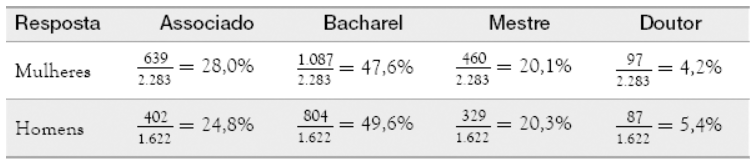
Duas distribuições condicionais de graus por sexo (M, H)
Gerar gráficos de barras empilhadas lado a lado para essas duas distribuições condicionais.
Código
```{r}# Criar data.frame com fatores e ordem explícita dos níveisgrausex <-data.frame(sex =factor(c(rep("M", 2283), rep("H", 1622)), levels =c("M", "H")),grau =factor(c(rep("ass", 639), rep("bach", 1087), rep("ms", 460), rep("dr", 97),rep("ass", 402), rep("bach", 804), rep("ms", 329), rep("dr", 87)),levels =c("ass", "bach", "ms", "dr")))# Tabela com linhas = sexo e colunas = grau (contagens)tab <-table(grausex$sex, grausex$grau)cat("Tabela de contagens (linhas = sexo, colunas = grau):\n")print(tab)# Distribuição condicional de grau dado o sexo:# para cada linha (sexo) as proporções somam 1prop_condicional <-prop.table(tab, margin =1)cat("\nDistribuição condicional (grau | sexo) - proporções:\n")print(round(prop_condicional, 4)) # 4 casas decimaiscat("\nDistribuição condicional (grau | sexo) - porcentagens:\n")print(round(100* prop_condicional, 2)) # em %# Data.frame com contagens e proporções (útil para relatórios/plotagem)df_counts <-as.data.frame(tab)names(df_counts) <-c("sexo", "grau", "contagem")df_props <-as.data.frame(prop_condicional)names(df_props) <-c("sexo", "grau", "proporcao")df_condicional <-merge(df_counts, df_props, by =c("sexo", "grau"))df_condicional$porcentagem <-round(100* df_condicional$proporcao, 2)# Preservar ordem dos fatores e ordenar para exibiçãodf_condicional$sexo <-factor(df_condicional$sexo, levels =levels(grausex$sex))df_condicional$grau <-factor(df_condicional$grau, levels =levels(grausex$grau))df_condicional <- df_condicional[order(df_condicional$sexo, df_condicional$grau), ]cat("\nData.frame com contagem + proporção condicional (ordenado):\n")print(df_condicional)# --- Opcional: gráfico (ggplot2) mostrando proporção de graus por sexo ---ggplot(df_condicional, aes(x = sexo, y = proporcao, fill = grau)) +geom_col(position ="stack") +# altura = proporção por sexo (soma = 1)scale_y_continuous(labels = scales::percent_format(accuracy =1)) +labs(title ="Distribuição condicional: Grau dado o Sexo",x ="Sexo", y ="Proporção (grau | sexo)") +theme_minimal()```
Tabela de contagens (linhas = sexo, colunas = grau):
ass bach ms dr
M 639 1087 460 97
H 402 804 329 87
Distribuição condicional (grau | sexo) - proporções:
ass bach ms dr
M 0.280 0.476 0.202 0.042
H 0.248 0.496 0.203 0.054
Distribuição condicional (grau | sexo) - porcentagens:
ass bach ms dr
M 28.0 47.6 20.1 4.2
H 24.8 49.6 20.3 5.4
Data.frame com contagem + proporção condicional (ordenado):
sexo grau contagem proporcao porcentagem
5 M ass 639 0.280 28.0
6 M bach 1087 0.476 47.6
8 M ms 460 0.201 20.1
7 M dr 97 0.042 4.2
1 H ass 402 0.248 24.8
2 H bach 804 0.496 49.6
4 H ms 329 0.203 20.3
3 H dr 87 0.054 5.4
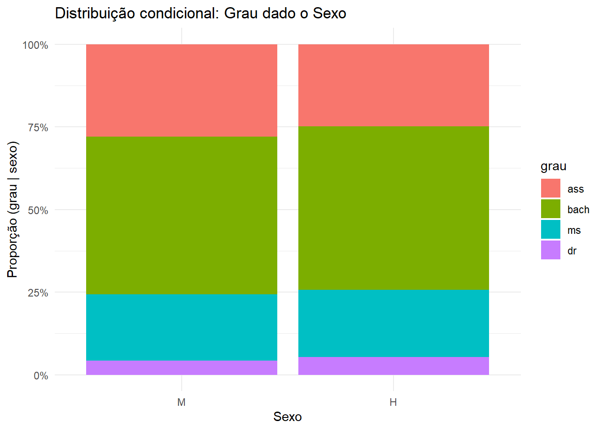
As porcentagens em cada linha devem somar 100% porque, para cada categoria de sexo, todos recebem um, [e somente um], dos quatro graus.
No entanto, em geral, as porcentagens podem não ter soma exatamente 100% porque arredondamos para um número fixo de casas decimais. Esse é o erro de arredondamento, e vemos que há erro de arredondamento aqui.
O mesmo gráfico mais elaborado: barras empilhadas lado a lado para essas duas distribuições condicionais com indicação dos percentuais de cada classe de graus dentro de cada classe de sexo.
Código
```{r}# Pacotes necessáriosif (!requireNamespace("ggplot2", quietly =TRUE)) install.packages("ggplot2")if (!requireNamespace("scales", quietly =TRUE)) install.packages("scales")library(ggplot2)library(scales)# Criar data.frame com fatores e ordem explícita dos níveis (preserva ordem nos gráficos)grausex <-data.frame(sex =factor(c(rep("M", 2283), rep("H", 1622)), levels =c("M", "H")),grau =factor(c(rep("ass", 639), rep("bach", 1087), rep("ms", 460), rep("dr", 97),rep("ass", 402), rep("bach", 804), rep("ms", 329), rep("dr", 87)),levels =c("ass", "bach", "ms", "dr")))# Preparar data.frame de contagens por sexo x graudf <-as.data.frame(table(grausex$sex, grausex$grau))names(df) <-c("sexo", "grau", "contagem")# Calcular proporção de cada grau dentro de cada sexo: P(grau | sexo)# usa ave para somar por sexo sem depender de dplyrdf$proporcao <- df$contagem /ave(df$contagem, df$sexo, FUN = sum)# Opcional: formatar rótulo em porcentagem (com 1 casa decimal)df$label_pct <-ifelse(df$proporcao >=0.03, percent(df$proporcao, accuracy =0.1), "") # (esconde rótulos muito pequenos para evitar sobreposição)# Gráfico: barras empilhadas com posição = "fill" para mostrar proporção dentro de cada sexop <-ggplot(df, aes(x = sexo, y = contagem, fill = grau)) +geom_col(position ="fill", width =0.6, colour ="grey30", size =0.1) +geom_text(aes(label = label_pct), position =position_fill(vjust =0.5), colour ="white", size =3) +scale_y_continuous(labels =percent_format(accuracy =1)) +scale_fill_brewer(palette ="Set2") +labs(title ="Proporção de graus dentro de cada sexo",x ="Sexo",y ="Proporção (cada barra = 100%)",fill ="Grau" ) +theme_minimal() +theme(plot.title =element_text(hjust =0.5) )# Exibir gráficoprint(p)# Observações:# - position = "fill" transforma as alturas em proporções por sexo (P(grau | sexo)).# - Rótulos aparecem apenas quando proporção >= 3% (ajuste em df$label_pct).# - A ordem dos graus é preservada pelos levels definidos em grausex$grau.```
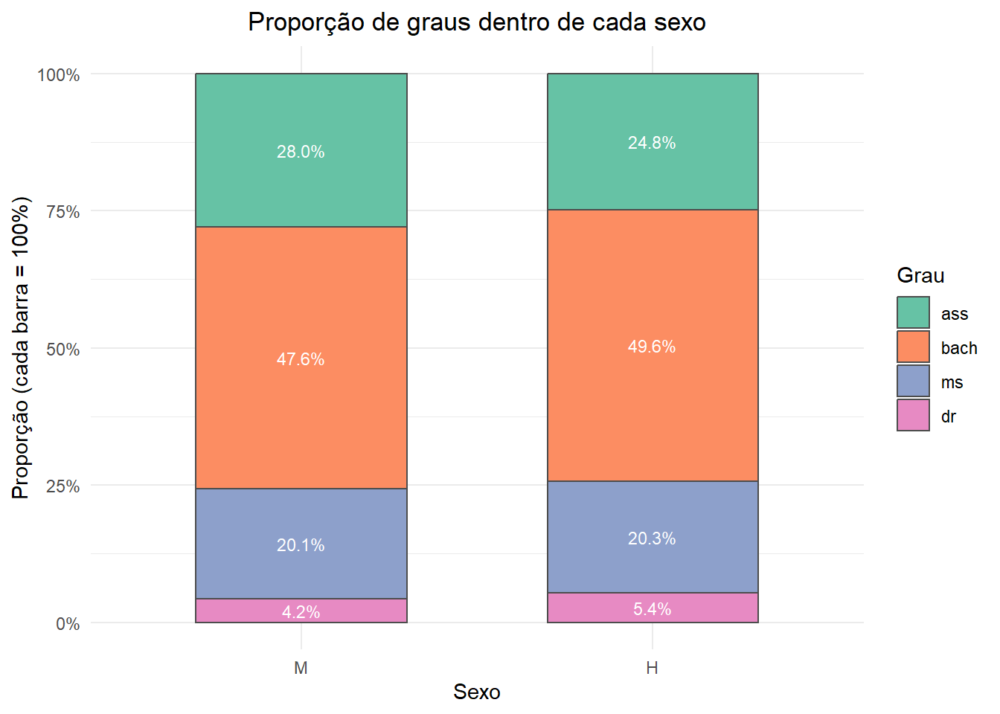
CONCLUA: a porcentagem projetada de mulheres a receber um grau de associado é maior do que a porcentagem projetada de homens a receber esse mesmo grau, enquanto a porcentagem projetada de homens a receber outros graus diferentes de associado é ligeiramente maior do que a porcentagem de mulheres.
Erro de Arredondamento
O erro de arredondamento é a pequena diferença entre um número decimal arredondado e seu valor preciso antes do arredondamento.
Um programa de computador fará esses cálculos para você. A maioria dos programas permite que você escolha quais distribuições condicionais você quer comparar. A saída na Figura 6.2 apresenta as duas distribuições condicionais de graus conferidos, uma para cada sexo, e também a distribuição marginal dos graus conferidos a todos os estudantes. As distribuições coincidem (a menos de erro de arredondamento) com os resultados nos Exemplos 6.2 e 6.3.
Lembre-se de que há dois conjuntos de distribuições condicionais para qualquer tabela de dupla entrada.
O Exemplo 6.3 examinou as distribuições condicionais de graus conferidos para as duas categorias de sexo. A Figura 6.3(a) faz essa comparação em um gráfico de barras, com barras separadas para homens e mulheres, lado a lado, para cada categoria de grau. Nesse gráfico, o total das quatro barras cinza-escuro é 100%, e o total das barras cinza-claro também é 100%.
Poderíamos também examinar as quatro distribuições condicionais de sexo, uma para cada categoria de grau conferido, olhando separadamente as quatro colunas na Tabela 6.1. A Figura 6.3(b) faz essa comparação em um gráfico de barras, novamente com barras separadas para homens e mulheres, lado a lado, para cada categoria de grau. Note que os percentuais de cada par lado a lado têm soma 100%. A Figura 6.3(c) também faz essa comparação. Em (c), cada barra é dividida (segmentada) em duas partes, representadas por dois tons de cinza. A porção superior de cada barra representa a proporção de mulheres que receberam cada grau. A porção inferior representa a proporção de homens. Cada barra tem altura 1, porque cada barra representa todos os estudantes em cada grupo diferente de pessoas. Gráficos de barras como esse na Figura 6.3(c), nos quais cada barra é dividida em partes, cada parte representando uma categoria diferente, são algumas vezes chamados de gráficos de barras segmentadas.
Gerar esses gráficos.
Código
```{r}# Preparar data.frame com contagens por grau x sexodf <-as.data.frame(table(grausex$grau, grausex$sex))names(df) <-c("grau", "sexo", "contagem")# Converter sexo para rótulos mais legíveis (opcional)df$sexo <-factor(df$sexo, levels =c("M", "H"), labels =c("Mulher", "Homem"))# Gráfico: barras lado a lado (position = position_dodge)p <-ggplot(df, aes(x = grau, y = contagem, fill = sexo)) +geom_col(position =position_dodge(width =0.8), width =0.7, colour ="grey20", size =0.2) +geom_text(aes(label = contagem),position =position_dodge(width =0.8),vjust =-0.3, size =3) +scale_fill_manual(values =c("#4E79A7", "#F28E2B")) +# cores opcionaislabs(title ="Distribuição de graus por sexo",x ="Grau acadêmico",y ="Contagem",fill ="Sexo" ) +theme_minimal() +theme(plot.title =element_text(hjust =0.5),axis.text.x =element_text(angle =0, vjust =0.5) )# Exibir gráficoprint(p)# Observações:# - Cada grupo em x (grau) contém duas barras: Mulher e Homem, lado a lado.# - Ajuste width/position_dodge para espaçamento diferente entre as barras.```
Mesmo gráfico acima agora com proporções no eixo y ao invés de contagens.
Código
```{r}# Criar data.frame com fatores e ordem explícita dos níveisgrausex <-data.frame(sex =factor(c(rep("M", 2283), rep("H", 1622)), levels =c("M", "H")),grau =factor(c(rep("ass", 639), rep("bach", 1087), rep("ms", 460), rep("dr", 97),rep("ass", 402), rep("bach", 804), rep("ms", 329), rep("dr", 87)),levels =c("ass", "bach", "ms", "dr")))# Preparar data.frame com contagens por grau x sexodf <-as.data.frame(table(grausex$grau, grausex$sex))names(df) <-c("grau", "sexo", "contagem")# Converter sexo para rótulos legíveisdf$sexo <-factor(df$sexo, levels =c("M", "H"), labels =c("Mulher", "Homem"))# Converter grau para rótulos legíveis (opcional)df$grau <-factor(df$grau,levels =c("ass", "bach", "ms", "dr"),labels =c("Associado", "Bacharel", "Mestre", "Doutor") )# Calcular proporção de cada sexo dentro de cada grau: P(sexo | grau)df$proporcao <- df$contagem /ave(df$contagem, df$grau, FUN = sum)# Rótulo em porcentagem (mostrar somente se >= 2% para evitar sobreposição)df$label <-ifelse(df$proporcao >=0.02, percent(df$proporcao, accuracy =0.1), "")# Calcular proporção de cada sexo dentro de cada grau: P(sexo | grau)df$proporcao <- df$contagem /ave(df$contagem, df$grau, FUN = sum)# Rótulo em porcentagemdf$label <-percent(df$proporcao, accuracy =0.1)# Posicionamento do texto: garantir que fique totalmente dentro da barra# - Para barras pequenas, colocar no centro (mais legível)# - Para barras maiores, colocar próximo à extremidade interna direita (95% do comprimento)df$label_x <-ifelse(df$proporcao <0.05, df$proporcao *0.5, # centro para barras muito pequenas df$proporcao *0.95) # perto da extremidade interna direita# Gráfico: barras agrupadas (lado a lado) por grau, depois inverte eixos (coord_flip)p <-ggplot(df, aes(x = grau, y = proporcao, fill = sexo)) +geom_col(position =position_dodge(width =0.8), width =0.7, colour ="grey20", size =0.2) +# geom_text com y = label_x posiciona o texto dentro da barra (posição horizontal definida por label_x)geom_text(aes(y = label_x, label = label),position =position_dodge(width =0.8), # mantém alinhamento com as barras dodgecolour ="white", size =3, fontface ="bold") +scale_y_continuous(labels =percent_format(accuracy =1)) +scale_fill_manual(values =c("#4E79A7", "#F28E2B")) +labs(title ="Proporção de sexo por grau (cada grau = 100%)",x ="Grau",y ="Proporção",fill ="Sexo" ) +theme_minimal() +theme(plot.title =element_text(hjust =0.5)) +coord_flip() # barras horizontais# Exibir gráficoprint(p)```
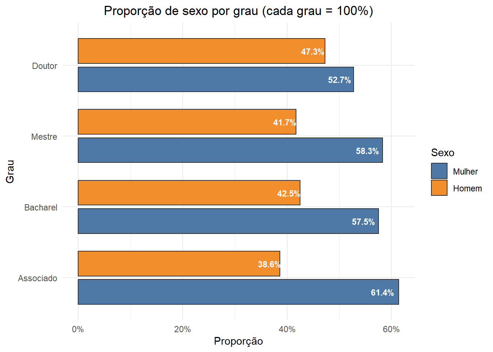
Mesmo gráfico acima com barras empilhadas.
Código
```{r}# Gerar gráfico de barras empilhadas (horizontais) mostrando P(sexo | grau)# Cada barra representa um grau; segmentos mostram a proporção de Mulher/Homem dentro desse grau.# Pacotes necessáriosif (!requireNamespace("ggplot2", quietly =TRUE)) install.packages("ggplot2")if (!requireNamespace("scales", quietly =TRUE)) install.packages("scales")library(ggplot2)library(scales)# Dados (preservar ordem dos níveis)grausex <-data.frame(sex =factor(c(rep("M", 2283), rep("H", 1622)), levels =c("M", "H")),grau =factor(c(rep("ass", 639), rep("bach", 1087), rep("ms", 460), rep("dr", 97),rep("ass", 402), rep("bach", 804), rep("ms", 329), rep("dr", 87)),levels =c("ass", "bach", "ms", "dr")))# Preparar data.frame de contagens por grau x sexodf <-as.data.frame(table(grausex$grau, grausex$sex))names(df) <-c("grau", "sexo", "contagem")# Etiquetas legíveis para sexodf$sexo <-factor(df$sexo, levels =c("M", "H"), labels =c("Mulher", "Homem"))# Calcular proporção de cada sexo dentro de cada grau: P(sexo | grau)df$proporcao <- df$contagem /ave(df$contagem, df$grau, FUN = sum)# Rótulo em porcentagem (mostrar apenas quando segmento for suficientemente grande)limite_label <-0.03# exibir rótulo somente se proporção >= 3%df$label <-ifelse(df$proporcao >= limite_label, percent(df$proporcao, accuracy =0.1), "")# Escolher cor do rótulo para garantir contraste (branco em segmentos grandes, preto em pequenos)df$label_color <-ifelse(df$proporcao >=0.15, "white", "black")# Gráfico: barras empilhadas (cada barra soma 100%) eixos invertidos (horizontais)p <-ggplot(df, aes(x = grau, y = proporcao, fill = sexo)) +geom_col(position ="stack", width =0.7, colour ="grey20", size =0.2) +geom_text(aes(label = label, colour = label_color),position =position_stack(vjust =0.5), size =3, fontface ="bold") +scale_colour_identity() +# usa as cores definidas em df$label_color diretamentescale_y_continuous(labels =percent_format(accuracy =1)) +scale_fill_manual(values =c("#4E79A7", "#F28E2B")) +labs(title ="Proporção de sexo por grau (cada grau = 100%) — barras empilhadas",x ="Grau",y ="Proporção",fill ="Sexo" ) +theme_minimal() +theme(plot.title =element_text(hjust =0.5)) +coord_flip() # barras horizontais# Exibir gráficoprint(p)```
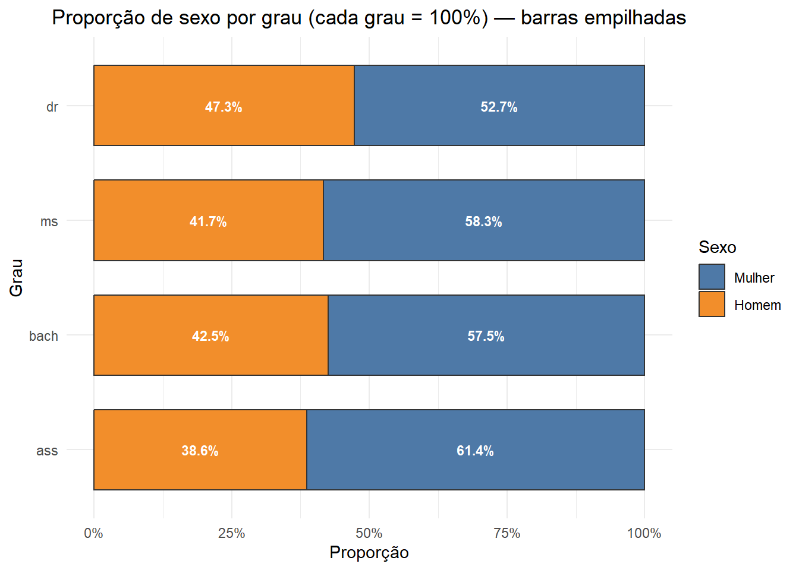
Mesmo gráfico anterior com as classes do grau ordenadas de cima para baixo.
Código
```{r}# Gráfico de barras empilhadas horizontais com as classes de 'grau'# ordenadas de cima para baixo (controle via levels do fator).# Pacotes necessáriosif (!requireNamespace("ggplot2", quietly =TRUE)) install.packages("ggplot2")if (!requireNamespace("scales", quietly =TRUE)) install.packages("scales")library(ggplot2)library(scales)# Dados (preservar ordem natural desejada das classes de grau)ordem_grau <-c("ass", "bach", "ms", "dr") # ordem desejada top -> bottom no gráfico finalgrausex <-data.frame(sex =factor(c(rep("M", 2283), rep("H", 1622)), levels =c("M", "H")),grau =factor(c(rep("ass", 639), rep("bach", 1087), rep("ms", 460), rep("dr", 97),rep("ass", 402), rep("bach", 804), rep("ms", 329), rep("dr", 87))))# Preparar data.frame de contagens por grau x sexodf <-as.data.frame(table(grausex$grau, grausex$sex))names(df) <-c("grau", "sexo", "contagem")# Etiquetas legíveis para sexodf$sexo <-factor(df$sexo, levels =c("M", "H"), labels =c("Mulher", "Homem"))# Garantir que 'grau' preserve a ordem desejada no gráfico:# Para que, após coord_flip(), a ordem apareça de cima para baixo como em ordem_grau,# definimos os níveis como o reverso da ordem desejada.df$grau <-factor(as.character(df$grau), levels =rev(ordem_grau))# Calcular proporção de cada sexo dentro de cada grau: P(sexo | grau)df$proporcao <- df$contagem /ave(df$contagem, df$grau, FUN = sum)# Rótulo em porcentagem (apenas quando segmento suficientemente grande)limite_label <-0.03df$label <-ifelse(df$proporcao >= limite_label, percent(df$proporcao, accuracy =0.1), "")# Cor do rótulo para contraste (branco em segmentos grandes)df$label_color <-ifelse(df$proporcao >=0.15, "white", "black")# Gráfico: barras empilhadas horizontais (cada grau = 100%)p <-ggplot(df, aes(x = grau, y = proporcao, fill = sexo)) +geom_col(position ="stack", width =0.7, colour ="grey20", size =0.2) +geom_text(aes(label = label, colour = label_color),position =position_stack(vjust =0.5), size =3, fontface ="bold") +scale_colour_identity() +scale_y_continuous(labels =percent_format(accuracy =1)) +scale_fill_manual(values =c("#4E79A7", "#F28E2B")) +labs(title ="Proporção de sexo por grau (cada grau = 100%) — empilhadas",x ="Grau",y ="Proporção",fill ="Sexo" ) +theme_minimal() +theme(plot.title =element_text(hjust =0.5)) +coord_flip() # barras horizontais; ordem por níveis de 'grau' (já invertida acima)# Exibir gráficoprint(p)```
Fica claro agora que, nos EUA, a categoria Mulher na variável sexo obterá maior proporção (> 50,0%) em cada uma das 4 categorias de graus.
No Brasil espera-se uma distribuição oposta a essa.
Gráfico de Barras Segmentadas
Um gráfico de barras segmentadas é um gráfico de barras para a apresentação de dados sobre duas variáveis categóricas no qual cada barra é dividida em partes. Cada barra representa as observações que assumem determinado valor de uma variável, e o comprimento de cada parte da barra representa a proporção daquelas observações que assumem um valor específico da segunda variável.
A Figura 6.4 mostra um gráfico de mosaico, que é uma variação de um gráfico de barras segmentadas.
Agora, as barras têm larguras diferentes, e essas larguras correspondem à proporção de estudantes em cada uma das quatro categorias de grau. Assim, as larguras mostram a distribuição marginal do grau conferido. Cada barra é, novamente, dividida (segmentada) em duas partes, representadas por dois tons de cinza. A porção superior (cinza-claro) de cada barra representa a proporção de mulheres entre os estudantes que receberam cada um dos graus. A outra porção (cinza-escuro) representa a proporção de homens. Cada barra tem altura de 100%, porque cada barra representa todos os adultos em cada grupo diferente de pessoas. O gráfico de mosaico é mais informativo do que o gráfico de barras segmentadas porque mostra a distribuição marginal do grau conferido, bem como a distribuição condicional de sexo, dado o grau conferido.
Código
```{r}# Gráfico mosaico para Grau x Sexo (preserva ordem dos níveis)# Instala e carrega pacote vcd opcionalmente (melhor visual). Fallback para mosaicplot().if (!requireNamespace("vcd", quietly =TRUE)) {message("Pacote 'vcd' não encontrado — usando mosaicplot() base. Para visual mais rico, instale: install.packages('vcd')")} else {library(vcd)}# Criar data.frame com fatores e ordem explícita dos níveisgrausex <-data.frame(sex =factor(c(rep("Mulher", 2283), rep("Homem", 1622)), levels =c("Mulher", "Homem")),grau =factor(c(rep("ass", 639), rep("bach", 1087), rep("ms", 460), rep("dr", 97),rep("ass", 402), rep("bach", 804), rep("ms", 329), rep("dr", 87)),levels =c("ass", "bach", "ms", "dr")))# Tabela de contingência (linhas = grau, colunas = sexo)tab <-table(grausex$grau, grausex$sex)# Exibir tabela para conferênciaprint(tab)# --- Gráfico mosaico com vcd::mosaic (se disponível) ---if ("vcd"%in%loadedNamespaces()) {# mosaic(~ grau + sex, ...) mostra pedaços por grau primeiro; shade colore conforme associação vcd::mosaic(~ grau + sex, data = grausex,shade =TRUE, legend =TRUE,main ="Gráfico mosaico — Grau vs Sexo",labeling_args =list(set_varnames =c(grau ="Grau", sex ="Sexo")) )} else {# fallback: mosaicplot da base R# note: mosaicplot espera tabela com categorias nas dimensões; color=TRUE usa paleta padrãomosaicplot(tab,main ="Gráfico mosaico — Grau vs Sexo (base)",xlab ="Grau", ylab ="Sexo",color =TRUE, las =1)}```
Mulher Homem
ass 639 402
bach 1087 804
ms 460 329
dr 97 87
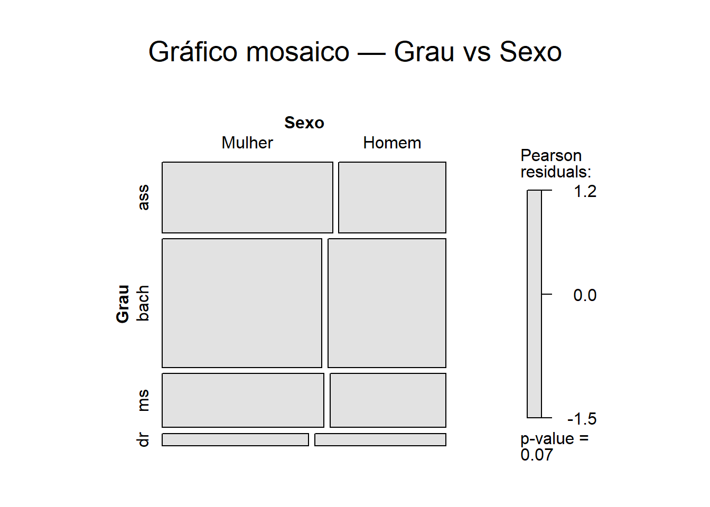
Gráfico de mosaico
Um gráfico de barras segmentadas no qual a largura de cada barra representa a proporção de todas as observações que estão na categoria que a barra representa.
Mesmo gráfico acima indicando as percentagens no eixo y e seu valor dentro de cada mosaico.
Código
```{r}# Mosaic-like com eixo y em percentagem (corrigido)# Corrige erro: "subset(...) deve ser lógico" substituindo uso incorreto de subset por indexação com match()if (!requireNamespace("ggplot2", quietly =TRUE)) install.packages("ggplot2")if (!requireNamespace("scales", quietly =TRUE)) install.packages("scales")library(ggplot2)library(scales)# Dados (preservar ordem dos níveis)grausex <-data.frame(sex =factor(c(rep("M", 2283), rep("H", 1622)), levels =c("M", "H")),grau =factor(c(rep("ass", 639), rep("bach", 1087), rep("ms", 460), rep("dr", 97),rep("ass", 402), rep("bach", 804), rep("ms", 329), rep("dr", 87)),levels =c("ass", "bach", "ms", "dr")))# Tabela de contingência grau x sexotab <-as.data.frame(table(grausex$grau, grausex$sex))names(tab) <-c("grau", "sexo", "contagem")# Totais por grau e total geraltotais_grau <-aggregate(contagem ~ grau, data = tab, sum)total_geral <-sum(totais_grau$contagem)# Garantir ordem desejada das categorias de grau (usa levels do fator original)ord <-levels(grausex$grau)# Obter as larguras (proporção de cada grau no total) na ordem correta# CORREÇÃO: usar indexação com match() em vez de subset(...)larguras <- totais_grau[match(ord, totais_grau$grau), ]larguras$prop <- larguras$contagem / total_geral# posições x para cada coluna (xmin/xmax)larguras$cum_prev <-c(0, head(cumsum(larguras$prop), -1))larguras$xmin <- larguras$cum_prevlarguras$xmax <- larguras$cum_prev + larguras$prop# juntar totais por grau ao dataframe por linhatab <-merge(tab, totais_grau, by ="grau", suffixes =c("", "_grau"))names(tab)[names(tab) =="contagem_grau"] <-"total_grau"# proporção dentro de cada grau (P(sexo | grau))tab$prop_within_grau <- tab$contagem / tab$total_grau# juntar posições x ao dataframe tab (mantendo ordem por grau)tab <-merge(tab, larguras[, c("grau", "xmin", "xmax")], by ="grau")# calcular posições y (ymin, ymax) empilhadas dentro de cada grautab <- tab[order(match(tab$grau, ord), tab$sexo), ] # ordenar por grau na ordem desejadatab <-do.call(rbind, lapply(split(tab, tab$grau), function(dfg) { dfg$ymin <-c(0, head(cumsum(dfg$prop_within_grau), -1)) dfg$ymax <- dfg$ymin + dfg$prop_within_grau dfg}))# posições para rótulos (centro de cada segmento)tab$xmid <- (tab$xmin + tab$xmax) /2tab$ymid <- (tab$ymin + tab$ymax) /2# rótulo em percentagem e cor de rótulo para contrastetab$label <-ifelse(tab$prop_within_grau >=0.03, percent(tab$prop_within_grau, accuracy =0.1), "")tab$label_col <-ifelse(tab$prop_within_grau >=0.15, "white", "black")# Texto de rodapé (nota)rodape <-"Gráfico de mosaico comparando as proporções de mulheres e homens entre aqueles em cada categoria\nde grau a ser conferido (n = 3905)."# Plot: retângulos com largura proporcional (mosaic-like) e y em percentagemp <-ggplot(tab) +geom_rect(aes(xmin = xmin, xmax = xmax, ymin = ymin, ymax = ymax, fill = sexo),colour ="grey30", size =0.2) +geom_text(aes(x = xmid, y = ymid, label = label, colour = label_col),size =3, fontface ="bold") +scale_colour_identity() +scale_y_continuous(labels =percent_format(accuracy =1), breaks =seq(0, 1, by =0.25)) +scale_x_continuous(breaks = (larguras$xmin + larguras$xmax) /2,labels = larguras$grau,expand =c(0, 0)) +scale_fill_manual(values =c("#4E79A7", "#F28E2B")) +labs(title ="Mosaico (estilo) — Grau x Sexo",subtitle ="Distribuição condicional do Sexo (%), uma vez dada a classe do Grau",x ="Grau (largura proporcional ao total do grau)",y ="Proporção dentro do grau (percentagem)",caption = rodape,fill ="Sexo") +theme_minimal() +theme(plot.title =element_text(hjust =0.5),panel.grid =element_blank())print(p)```
A Figura 6.4 acima mostra apenas um dos dois conjuntos de distribuições condicionais.
Precisaríamos de outro gráfico para apresentar o outro (a distribuição condicional de grau conferido, dado o sexo). Também, os gráficos nas Figuras 6.3 e 6.4 indicam apenas porcentagens ou proporções, não contagens totais.
Script R comentado para o gráfico mosaico anterior agora para o grau dado o sexo.
Código
```{r}# Mosaic-like: Grau dado o Sexo (P(grau | sexo)) com rótulos "Mulher" / "Homem"# Legenda de 'Grau' invertida (ordem mostrada de cima para baixo invertida)if (!requireNamespace("ggplot2", quietly =TRUE)) install.packages("ggplot2")if (!requireNamespace("scales", quietly =TRUE)) install.packages("scales")library(ggplot2)library(scales)# Dados (sexos nomeados como "Mulher" e "Homem", ordem preservada)grausex <-data.frame(sex =factor(c(rep("Mulher", 2283), rep("Homem", 1622)), levels =c("Mulher", "Homem")),grau =factor(c(rep("ass", 639), rep("bach", 1087), rep("ms", 460), rep("dr", 97),rep("ass", 402), rep("bach", 804), rep("ms", 329), rep("dr", 87)),levels =c("ass", "bach", "ms", "dr")))# Tabela de contagens por sexo x grautab <-as.data.frame(table(grausex$sex, grausex$grau))names(tab) <-c("sexo", "grau", "contagem")# Totais por sexo e total geral (para larguras das colunas)totais_sexo <-aggregate(contagem ~ sexo, data = tab, sum)total_geral <-sum(totais_sexo$contagem)# Garantir ordem desejada dos sexos e grausord_sexo <-levels(grausex$sex) # c("Mulher","Homem")ord_grau <-levels(grausex$grau) # c("ass","bach","ms","dr")# Larguras proporcionais por sexo (na ordem correta)larguras <- totais_sexo[match(ord_sexo, totais_sexo$sexo), ]larguras$prop <- larguras$contagem / total_gerallarguras$cum_prev <-c(0, head(cumsum(larguras$prop), -1))larguras$xmin <- larguras$cum_prevlarguras$xmax <- larguras$cum_prev + larguras$prop# Juntar totais ao dataframe por linhatab <-merge(tab, totais_sexo, by ="sexo", suffixes =c("", "_sexo"))names(tab)[names(tab) =="contagem_sexo"] <-"total_sexo"# Proporção dentro de cada sexo: P(grau | sexo)tab$prop_within_sexo <- tab$contagem / tab$total_sexo# Juntar posições x (xmin/xmax) ao dataframe tabtab <-merge(tab, larguras[, c("sexo", "xmin", "xmax")], by ="sexo")# Calcular posições y empilhadas (ymin/ymax) dentro de cada sexo, mantendo ordem de grautab <- tab[order(match(tab$sexo, ord_sexo), match(tab$grau, ord_grau)), ]tab <-do.call(rbind, lapply(split(tab, tab$sexo), function(dfg) { dfg <- dfg[order(match(dfg$grau, ord_grau)), ] dfg$ymin <-c(0, head(cumsum(dfg$prop_within_sexo), -1)) dfg$ymax <- dfg$ymin + dfg$prop_within_sexo dfg}))# Posições para rótulos (centro de cada segmento)tab$xmid <- (tab$xmin + tab$xmax) /2tab$ymid <- (tab$ymin + tab$ymax) /2# Rótulos em percentagem (mostrar só quando segmento >= 3% dentro do sexo)tab$label <-ifelse(tab$prop_within_sexo >=0.03, percent(tab$prop_within_sexo, accuracy =0.1), "")tab$label_col <-ifelse(tab$prop_within_sexo >=0.15, "white", "black")# Texto de rodapé (opcional)rodape <-"Gráfico de mosaico: proporção de graus dentro de cada sexo (P(grau | sexo))."# Plot: a única diferença em relação ao script anterior é a inversão da legenda de 'grau'p <-ggplot(tab) +geom_rect(aes(xmin = xmin, xmax = xmax, ymin = ymin, ymax = ymax, fill = grau),colour ="grey30", size =0.2) +geom_text(aes(x = xmid, y = ymid, label = label, colour = label_col),size =3, fontface ="bold") +scale_colour_identity() +scale_y_continuous(labels =percent_format(accuracy =1), breaks =seq(0, 1, by =0.25)) +scale_x_continuous(breaks = (larguras$xmin + larguras$xmax) /2,labels = larguras$sexo,expand =c(0, 0)) +scale_fill_brewer(type ="qual", palette ="Set2", labels = ord_grau) +labs(title ="Mosaic (estilo) — Grau dado o Sexo",x ="Sexo (largura proporcional ao total por sexo)",y ="Proporção dentro do sexo (percentagem)",fill ="Grau",caption = rodape) +guides(fill =guide_legend(reverse =TRUE)) +# INVERTE apenas a ordem da legenda de 'Grau'theme_minimal() +theme(plot.title =element_text(hjust =0.5),panel.grid =element_blank(),plot.caption =element_text(hjust =0, size =9, face ="italic", margin =margin(t =8)))print(p)```
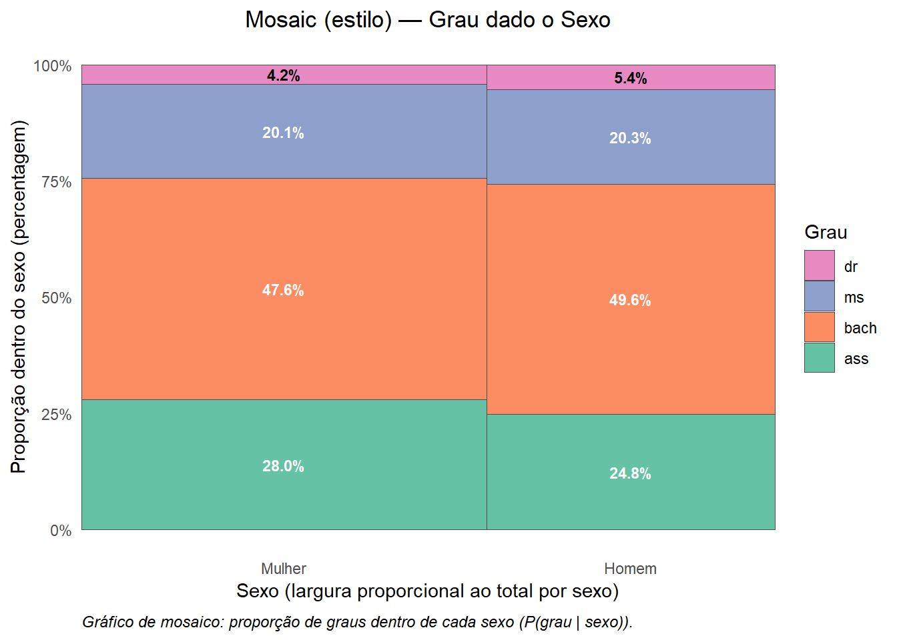
Gráficos!
Nenhum gráfico único retrata a forma da relação entre variáveis categóricas (como um diagrama de dispersão faz para variáveis quantitativas).
Nenhuma medida numérica única (como a correlação) resume a intensidade da associação.
Gráficos de barras são flexíveis o bastante para serem úteis, mas você deve pensar sobre quais comparações você deseja apresentar.
Para medidas numéricas, confiamos em porcentagens bem escolhidas. Convém você decidir de quais porcentagens você precisa.
Eis uma sugestão: se houver uma relação explicativa-resposta, compare as distribuições condicionais da variável resposta para os valores separados da variável explicativa. Se você acha que sexo influencia o grau conferido, compare as distribuições condicionais de grau conferido para cada categoria de sexo, como no Exemplo 6.3.
7.3.2 Aplique seu conhecimento
7.3.2.1 6.3 Videogames e conceitos.
O Exercício 6.1 fornece os dados sobre a distribuição de conceitos de meninos que jogaram e não jogaram videogames.
Para ver a relação entre conceitos e jogar videogames, determine as distribuições condicionais de conceitos (a variável resposta) para jogadores e não jogadores. O que você conclui?
Código
```{r}# Criar tabela agregada: Conceito x Jogaram videogamecounts <-matrix(c(736, 450, 193, # "Jogaram videogame"205, 144, 80# "Nunca jogaram videogame" ),nrow =2,byrow =TRUE)rownames(counts) <-c("Jogaram videogame", "Nunca jogaram videogame")colnames(counts) <-c("As e Bs", "Cs", "Ds e Fs")# Converter para objeto tabletab <-as.table(counts)# Exibir tabela de contagenscat("Tabela de contagens (linhas = status, colunas = conceito):\n")print(tab)# --- Distribuições condicionais: P(conceito | status) ---# margin = 1 ==> soma por linha = 1 (cada status)condicional <-prop.table(tab, margin =1)cat("\nDistribuições condicionais P(conceito | status) (proporções):\n")print(round(condicional, 4))cat("\nDistribuições condicionais P(conceito | status) (percentuais):\n")print(round(100* condicional, 2))# --- Data.frame "long" com contagens e proporções (útil para plotagem) ---df <-as.data.frame(tab)names(df) <-c("status", "conceito", "contagem")# proporção de cada conceito dentro do respectivo statusdf$proporcao <- df$contagem /ave(df$contagem, df$status, FUN = sum)df$percent <-round(100* df$proporcao, 2)cat("\nData.frame com contagem + proporção condicional (ordenado):\n")print(df)cat("\nTamanho da amostra:", sum(df$contagem),"\n")# --- Teste de independência (opcional) ---# chisq <- chisq.test(tab)# print(chisq)# --- Gráfico: barras empilhadas mostrando composição por status (cada barra = 100%) ---if (!requireNamespace("ggplot2", quietly =TRUE)) install.packages("ggplot2")if (!requireNamespace("scales", quietly =TRUE)) install.packages("scales")library(ggplot2)library(scales)# Preservar ordem das categoriasdf$status <-factor(df$status, levels =c("Jogaram videogame", "Nunca jogaram videogame"))df$conceito <-factor(df$conceito, levels =c("As e Bs", "Cs", "Ds e Fs"))p <-ggplot(df, aes(x = status, y = contagem, fill = conceito)) +geom_col(position ="fill", colour ="grey30", size =0.2) +scale_y_continuous(labels =percent_format(accuracy =1)) +geom_text(aes(label =ifelse(proporcao >=0.03, percent(proporcao, accuracy =0.1), "")),position =position_fill(vjust =0.5), size =3, colour ="white", fontface ="bold") +labs(title ="Composição por Conceito dentro de cada Status de Jogar videogame",x ="Status",y ="Proporção dentro do status",fill ="Conceito" ) +theme_minimal() +theme(plot.title =element_text(hjust =0.5))print(p)```
Tabela de contagens (linhas = status, colunas = conceito):
As e Bs Cs Ds e Fs
Jogaram videogame 736 450 193
Nunca jogaram videogame 205 144 80
Distribuições condicionais P(conceito | status) (proporções):
As e Bs Cs Ds e Fs
Jogaram videogame 0.53 0.33 0.14
Nunca jogaram videogame 0.48 0.34 0.19
Distribuições condicionais P(conceito | status) (percentuais):
As e Bs Cs Ds e Fs
Jogaram videogame 53 33 14
Nunca jogaram videogame 48 34 19
Data.frame com contagem + proporção condicional (ordenado):
status conceito contagem proporcao percent
1 Jogaram videogame As e Bs 736 0.53 53
2 Nunca jogaram videogame As e Bs 205 0.48 48
3 Jogaram videogame Cs 450 0.33 33
4 Nunca jogaram videogame Cs 144 0.34 34
5 Jogaram videogame Ds e Fs 193 0.14 14
6 Nunca jogaram videogame Ds e Fs 80 0.19 19
Tamanho da amostra: 1808
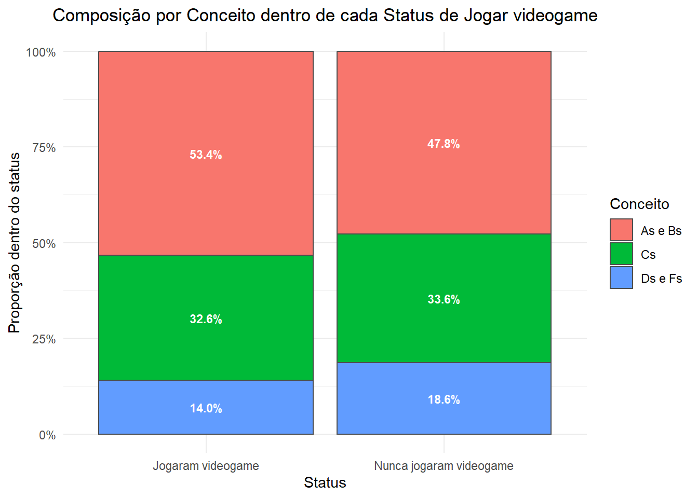
Considerando a variável Jogar Videogame como explicativa e a variável Conceito como resposta, então os meninos que já jogaram apresentam Conceito A ou B em maior proporção (53,4%) que aqueles que nunca jograram (47,8%).
Os jogadores tiveram conceitos um pouco maiores que os não jogadores, é o que podemos dizer, mas isso poderia se dever ao acaso.
Muito embora a amostra tenha um tamanho = 1808.
Não pode esquecer da reflexão sobre variáveis ocultas.
Qual as possíveis variáveis ocultas nesse exemplo?
7.3.2.2 6.3 Idades de universitários.
O Exercício 6.2 fornece dados do U.S. Census Bureau que descrevem a idade e o sexo de todos os estudantes universitários americanos.
Suspeitamos de que o percentual de mulheres seja maior entre estudantes na faixa etária de 25 a 34 anos do que na faixa etária de 20 a 24 anos. Os dados apoiam essa suspeita? Siga o processo dos quatro passos, como ilustrado no Exemplo 6.3.
Código
```{r}# Análise: comparar percentual de mulheres em 25-34 vs 20-24# Entrada: tabela longa com colunas Age, Sex, Count (conforme fornecido)## Saídas:# - Distribuições condicionais P(Mulher | faixa)# - Teste de duas proporções (unilateral H1: p25-34 > p20-24)# - Gráfico das proporções com IC95%# Pacotesif (!requireNamespace("dplyr", quietly =TRUE)) install.packages("dplyr")if (!requireNamespace("ggplot2", quietly =TRUE)) install.packages("ggplot2")if (!requireNamespace("scales", quietly =TRUE)) install.packages("scales")library(dplyr); library(ggplot2); library(scales)# --- Criar data.frame a partir da tabela longa fornecida ---df_long <-data.frame(Age =c("15to19","20to24","25to34","35up","15to19","20to24","25to34","35up"),Sex =c("Female","Female","Female","Female","Male","Male","Male","Male"),Count =c(2348, 4280, 2166, 1492,1831, 3713, 1714, 853),stringsAsFactors =FALSE)# Exibir tamanho da amostracat("\ntotal das contagens (tamanho amostra) n:\n")print( sum(df_long$Count) )# Padronizar rótulos de sexo para pt-BR (opcional)df_long <- df_long %>%mutate(sexo =case_when(tolower(Sex) %in%c("female", "f") ~"Mulher",tolower(Sex) %in%c("male", "m") ~"Homem",TRUE~ Sex ),faixa =case_when( Age =="15to19"~"15-19", Age =="20to24"~"20-24", Age =="25to34"~"25-34", Age =="35up"~"35+",TRUE~ Age )) %>%select(faixa, sexo, Count)# --- Calcular totais por faixa e proporções condicionais P(Mulher | faixa) ---totais_faixa <- df_long %>%group_by(faixa) %>%summarise(total_faixa =sum(Count), .groups ="drop")res <- df_long %>%left_join(totais_faixa, by ="faixa") %>%mutate(proporcao = Count / total_faixa) %>%arrange(faixa, desc(sexo))# Exibir tabela resumidacat("\nDistribuição por faixa e sexo (contagens e proporções):\n")print(res)# --- Extrair números necessários para as duas faixas de interesse ---n_20_24 <- res %>%filter(faixa =="20-24", sexo =="Mulher") %>%pull(Count)N_20_24 <- res %>%filter(faixa =="20-24") %>%slice(1) %>%pull(total_faixa)n_25_34 <- res %>%filter(faixa =="25-34", sexo =="Mulher") %>%pull(Count)N_25_34 <- res %>%filter(faixa =="25-34") %>%slice(1) %>%pull(total_faixa)# Segurança caso algum esteja NAn_20_24 <-ifelse(length(n_20_24)==0, 0, n_20_24)n_25_34 <-ifelse(length(n_25_34)==0, 0, n_25_34)# --- Teste de duas proporções (unilateral)# H0: p20-24 = p25-34 vs H1: p25-34 > p20-24# Usamos prop.test com x = c(x1, x2) e n = c(n1, n2); alternative = "less"# (colocamos p1 = 20-24, p2 = 25-34; alternative = "less" testa p1 < p2)prop_test <-prop.test(x =c(n_20_24, n_25_34),n =c(N_20_24, N_25_34),alternative ="less",correct =FALSE)cat("\n--- Teste de duas proporções (unilateral H1: p25-34 > p20-24) ---\n")print(prop_test)# --- IC95% para cada proporção individual (para plotagem) ---ci_20 <-prop.test(n_20_24, N_20_24, correct =FALSE)$conf.intci_25 <-prop.test(n_25_34, N_25_34, correct =FALSE)$conf.intplot_df <-data.frame(faixa =c("20-24","25-34"),proporcao =c(n_20_24 / N_20_24, n_25_34 / N_25_34),ci_low =c(ci_20[1], ci_25[1]),ci_upp =c(ci_20[2], ci_25[2]))# --- Gráfico: proporções com IC95% ---ggplot(plot_df, aes(x = faixa, y = proporcao, fill = faixa)) +geom_col(width =0.5, show.legend =FALSE) +geom_errorbar(aes(ymin = ci_low, ymax = ci_upp), width =0.12, size =0.8) +geom_text(aes(label = scales::percent(proporcao, accuracy =0.1)),vjust =-0.6, size =3.5) +scale_y_continuous(labels =percent_format(accuracy =1), limits =c(0, 1)) +labs(title ="Proporção de mulheres por faixa etária",subtitle ="Comparação entre 20-24 e 25-34 anos",x ="Faixa etária (anos)",y ="Proporção de mulheres (IC95%)") +theme_minimal()# --- Interpretação simples automática ---pval <- prop_test$p.valuecat("\nInterpretação (teste unilaeral):\n")if (pval <0.05) {cat(sprintf("p = %.4f < 0.05: evidência de que a proporção de mulheres é maior em 25-34 do que em 20-24.\n", pval))} else {cat(sprintf("p = %.4f >= 0.05: sem evidência suficiente de que a proporção de mulheres seja maior em 25-34.\n", pval))}# FIM```
total das contagens (tamanho amostra) n:
[1] 18397
Distribuição por faixa e sexo (contagens e proporções):
faixa sexo Count total_faixa proporcao
1 15-19 Mulher 2348 4179 0.56
2 15-19 Homem 1831 4179 0.44
3 20-24 Mulher 4280 7993 0.54
4 20-24 Homem 3713 7993 0.46
5 25-34 Mulher 2166 3880 0.56
6 25-34 Homem 1714 3880 0.44
7 35+ Mulher 1492 2345 0.64
8 35+ Homem 853 2345 0.36
--- Teste de duas proporções (unilateral H1: p25-34 > p20-24) ---
2-sample test for equality of proportions without continuity correction
data: c(n_20_24, n_25_34) out of c(N_20_24, N_25_34)
X-squared = 5, df = 1, p-value = 0.01
alternative hypothesis: less
95 percent confidence interval:
-1.0000 -0.0068
sample estimates:
prop 1 prop 2
0.54 0.56
Interpretação (teste unilaeral):
p = 0.0097 < 0.05: evidência de que a proporção de mulheres é maior em 25-34 do que em 20-24.
É preciso cuidado na interpretação dessas saídas, pois um grande tamanho de amostra pode capturar pequenas diferenças entre as duas categorias, que podem não ser praticamente significativas.
7.4 Paradoxo de Simpson
Como no caso de variáveis quantitativas, os efeitos de variáveis ocultas podem mudar, ou mesmo inverter, relações entre duas variáveis categóricas. Aqui está um exemplo que demonstra as surpresas com as quais um usuário de dados menos avisado pode se defrontar.
Código
```{r}# Exemplo do Paradoxo de Simpson: socorro por Helicóptero vs Ambulância# Em cada estrato (Leve / Grave) Helicóptero tem maior taxa de sobrevivência,# mas ao agregar os dados Ambulância apresenta taxa global maior.## Dados hipotéticos construídos para ilustrar o paradoxo.# Pacotes necessáriosif (!requireNamespace("dplyr", quietly =TRUE)) install.packages("dplyr")if (!requireNamespace("ggplot2", quietly =TRUE)) install.packages("ggplot2")if (!requireNamespace("scales", quietly =TRUE)) install.packages("scales")library(dplyr)library(ggplot2)library(scales)# --- Construção dos dados (contagens) ---# Estratos: "Leve" e "Grave"# Notação: successes = sobreviventes, total = número de acidentados atendidos# Projeto intencional:# - Helicóptero tem taxas maiores em ambos os estratos# - Ambulância atende muito mais casos no estrato com alta taxa, invertendo o resultado agregadodf_counts <-data.frame(estrato =rep(c("Leve", "Grave"), each =2),transporte =rep(c("Helicóptero", "Ambulância"), times =2),success =c(9, 72, # Leve: H = 9/10 (0.90), A = 72/90 (0.80)63, 6), # Grave: H = 63/90 (0.70), A = 6/10 (0.60)total =c(10, 90, # totais correspondentes90, 10),stringsAsFactors =FALSE)# Calcular taxas por céluladf_counts <- df_counts %>%mutate(rate = success / total)# Mostrar tabela de contingência formatadacat("Tabela de contagens (cada linha = estrato x transporte):\n")print(df_counts)# --- Comparações por estrato (teste de proporção) ---cat("\nTestes por estrato (Helicóptero vs Ambulância):\n")for (e inunique(df_counts$estrato)) { sub <- df_counts %>%filter(estrato == e) %>%arrange(transporte)# x: successes para os dois grupos; n: totals x <- sub$success n <- sub$total# prop.test compara as duas proporções (2 grupos) tst <-prop.test(x = x, n = n, correct =FALSE)cat(sprintf("\nEstrato: %s\n", e))print(sub)print(tst)}# --- Agregado: somar successes e totals por transporte ---totais <- df_counts %>%group_by(transporte) %>%summarise(success =sum(success), total =sum(total), .groups ="drop") %>%mutate(rate = success / total)cat("\nTotais agregados por transporte:\n")print(totais)# Teste agregado (Helicóptero vs Ambulância)tst_global <-prop.test(x = totais$success, n = totais$total, correct =FALSE)cat("\nTeste agregado (Helicóptero vs Ambulância):\n")print(tst_global)# --- Visualização: taxas por estrato e agregado ---# Preparar dados para plot: taxas estrato-por-estrato + linha do agregadoplot_df <- df_counts %>%mutate(estrato =factor(estrato, levels =c("Leve", "Grave"))) %>%select(estrato, transporte, rate, success, total)# Dados agregados para adicionar como painel "Agregado"agregado_panel <- totais %>%mutate(estrato ="Agregado") %>%select(estrato, transporte, rate, success, total)plot_df_all <-bind_rows(plot_df, agregado_panel) %>%mutate(estrato =factor(estrato, levels =c("Leve", "Grave", "Agregado")))p <-ggplot(plot_df_all, aes(x = transporte, y = rate, fill = transporte)) +geom_col(position ="dodge", width =0.6, show.legend =FALSE) +geom_text(aes(label =paste0(success, "/", total, "\n", percent(rate, accuracy =0.1))),position =position_dodge(width =0.6), vjust =-0.5, size =3) +facet_wrap(~ estrato, nrow =1) +scale_y_continuous(labels =percent_format(accuracy =1), limits =c(0, 1)) +scale_fill_manual(values =c("Helicóptero"="#4E79A7", "Ambulância"="#F28E2B")) +labs(title ="Exemplo do Paradoxo de Simpson — Socorro por Helicóptero vs Ambulância",subtitle ="Em cada estrato Helicóptero tem taxa maior; agregado favorece Ambulância",x ="", y ="Taxa de sobrevivência",caption ="Dados hipotéticos ilustrativos") +theme_minimal() +theme(plot.title =element_text(hjust =0.5))print(p)# --- Interpretação curta ---cat("\nInterpretação:\n")cat("- Em cada estrato (Leve e Grave) a taxa de sobrevivência do Helicóptero é maior que a da Ambulância.\n")cat("- No entanto, devido à distribuição muito diferente do número de pacientes entre estratos para cada transporte\n")cat(" (ambulância atende muitos casos no estrato com alta taxa), a taxa global da Ambulância é maior.\n")cat("- Esse é o Paradoxo de Simpson: a tendência observada em cada estrato pode ser invertida ao agregar os dados.\n")# Fim```
Tabela de contagens (cada linha = estrato x transporte):
estrato transporte success total rate
1 Leve Helicóptero 9 10 0.9
2 Leve Ambulância 72 90 0.8
3 Grave Helicóptero 63 90 0.7
4 Grave Ambulância 6 10 0.6
Testes por estrato (Helicóptero vs Ambulância):
Estrato: Leve
estrato transporte success total rate
1 Leve Ambulância 72 90 0.8
2 Leve Helicóptero 9 10 0.9
2-sample test for equality of proportions without continuity correction
data: x out of n
X-squared = 0.6, df = 1, p-value = 0.4
alternative hypothesis: two.sided
95 percent confidence interval:
-0.3 0.1
sample estimates:
prop 1 prop 2
0.8 0.9
Estrato: Grave
estrato transporte success total rate
1 Grave Ambulância 6 10 0.6
2 Grave Helicóptero 63 90 0.7
2-sample test for equality of proportions without continuity correction
data: x out of n
X-squared = 0.4, df = 1, p-value = 0.5
alternative hypothesis: two.sided
95 percent confidence interval:
-0.42 0.22
sample estimates:
prop 1 prop 2
0.6 0.7
Totais agregados por transporte:
# A tibble: 2 × 4
transporte success total rate
<chr> <dbl> <dbl> <dbl>
1 Ambulância 78 100 0.78
2 Helicóptero 72 100 0.72
Teste agregado (Helicóptero vs Ambulância):
2-sample test for equality of proportions without continuity correction
data: totais$success out of totais$total
X-squared = 1, df = 1, p-value = 0.3
alternative hypothesis: two.sided
95 percent confidence interval:
-0.06 0.18
sample estimates:
prop 1 prop 2
0.78 0.72
Interpretação:
- Em cada estrato (Leve e Grave) a taxa de sobrevivência do Helicóptero é maior que a da Ambulância.
- No entanto, devido à distribuição muito diferente do número de pacientes entre estratos para cada transporte
(ambulância atende muitos casos no estrato com alta taxa), a taxa global da Ambulância é maior.
- Esse é o Paradoxo de Simpson: a tendência observada em cada estrato pode ser invertida ao agregar os dados.
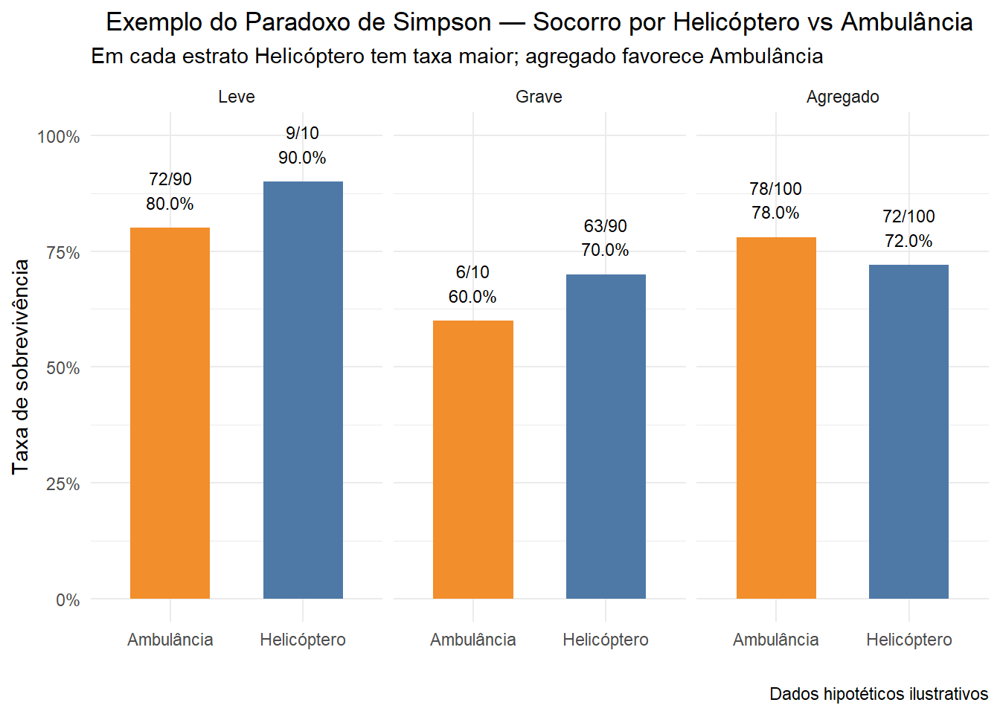
7.5 Verifique suas habilidades
Redes sociais
Código
```{r}# Script: calculo de distribuições marginal e condicional# Como usar: execute no R ou RStudio: source("scripts/distribuicoes_marginais_condicionais.R")# 1) Monta a tabela de contingência com os valores fornecidosidades <-c("18-29", "30-49", "50-64", "65+")respostas <-c("Sim", "Não")# Os valores estão em ordem por linha: (Sim, Não) para cada faixa etáriacounts <-matrix(c(212, 24, # Idade 18-29324, 71, # Idade 30-49293, 131, # Idade 50-64156, 235# Idade 65+ ),nrow =length(idades),byrow =TRUE)rownames(counts) <- idadescolnames(counts) <- respostas# Mostra a tabela brutacat("Tabela de contingência (frequências absolutas):\n")print(counts)cat("\n")# Total geraltotal <-sum(counts)cat("Total geral:", total, "\n\n")# 2) Distribuições marginais# - Marginal por idade (soma por linha)marginal_idade <-rowSums(counts)# - Marginal por resposta (soma por coluna)marginal_resposta <-colSums(counts)cat("Distribuição marginal por idade (frequências):\n")print(marginal_idade)cat("\nDistribuição marginal por resposta (frequências):\n")print(marginal_resposta)cat("\n")# Também em proporções (frações do total) e em percentuaisprop_marginal_idade <- marginal_idade / totalprop_marginal_resposta <- marginal_resposta / totalcat("Distribuição marginal por idade (percentual):\n")print(round(prop_marginal_idade *100, 2))cat("\nDistribuição marginal por resposta (percentual):\n")print(round(prop_marginal_resposta *100, 2))cat("\n")# 3) Distribuição conjunta em proporções (tabela de proporções)prop_conjunta <-prop.table(counts) # por padrão divide por totalcat("Tabela conjunta (proporções):\n")print(round(prop_conjunta, 4))cat("\nTabela conjunta (percentual):\n")print(round(prop_conjunta *100, 2))cat("\n")# 4) Distribuições condicionais# a) Condicional por linha: P(Resposta | Idade) => prop.table com margin = 1condicional_por_idade <-prop.table(counts, margin =1)cat("P(Resposta | Idade) — probabilidade de 'Sim' ou 'Não' dado a faixa etária (linhas somam 1):\n")print(round(condicional_por_idade, 4))cat("\nEm percentuais:\n")print(round(condicional_por_idade *100, 2))cat("\n")# b) Condicional por coluna: P(Idade | Resposta) => prop.table com margin = 2condicional_por_resposta <-prop.table(counts, margin =2)cat("P(Idade | Resposta) — distribuição etária entre quem disse 'Sim' ou 'Não' (colunas somam 1):\n")print(round(condicional_por_resposta, 4))cat("\nEm percentuais:\n")print(round(condicional_por_resposta *100, 2))cat("\n")# 5) Exemplos de acesso aos valores:# P(Sim | 18-29)p_sim_18_29 <- condicional_por_idade["18-29", "Sim"]cat("P(Sim | 18-29) =", round(p_sim_18_29, 4), "(", round(p_sim_18_29*100,2), "% )\n")# P(18-29 | Sim)p_18_29_sim <- condicional_por_resposta["18-29", "Sim"]cat("P(18-29 | Sim) =", round(p_18_29_sim, 4), "(", round(p_18_29_sim*100,2), "% )\n")# Fim do script```
Tabela de contingência (frequências absolutas):
Sim Não
18-29 212 24
30-49 324 71
50-64 293 131
65+ 156 235
Total geral: 1446
Distribuição marginal por idade (frequências):
18-29 30-49 50-64 65+
236 395 424 391
Distribuição marginal por resposta (frequências):
Sim Não
985 461
Distribuição marginal por idade (percentual):
18-29 30-49 50-64 65+
16 27 29 27
Distribuição marginal por resposta (percentual):
Sim Não
68 32
Tabela conjunta (proporções):
Sim Não
18-29 0.15 0.017
30-49 0.22 0.049
50-64 0.20 0.091
65+ 0.11 0.163
Tabela conjunta (percentual):
Sim Não
18-29 15 1.7
30-49 22 4.9
50-64 20 9.1
65+ 11 16.2
P(Resposta | Idade) — probabilidade de 'Sim' ou 'Não' dado a faixa etária (linhas somam 1):
Sim Não
18-29 0.90 0.10
30-49 0.82 0.18
50-64 0.69 0.31
65+ 0.40 0.60
Em percentuais:
Sim Não
18-29 90 10
30-49 82 18
50-64 69 31
65+ 40 60
P(Idade | Resposta) — distribuição etária entre quem disse 'Sim' ou 'Não' (colunas somam 1):
Sim Não
18-29 0.22 0.052
30-49 0.33 0.154
50-64 0.30 0.284
65+ 0.16 0.510
Em percentuais:
Sim Não
18-29 22 5.2
30-49 33 15.4
50-64 30 28.4
65+ 16 51.0
P(Sim | 18-29) = 0.9 ( 90 % )
P(18-29 | Sim) = 0.22 ( 22 % )
Gráficos
Código
```{r}# Script: gráficos de barras empilhadas (contagem e 100% empilhado)# Como usar: source("scripts/graficos_barras_empilhadas.R") ou execute no RStudio# Saídas: exibe os gráficos e salva arquivos PNG no diretório de trabalho# 0) Instala/carrega pacotes necessários (instala apenas se não existir)required_pkgs <-c("ggplot2", "dplyr", "scales", "RColorBrewer")installed <-rownames(installed.packages())for (pkg in required_pkgs) {if (!pkg %in% installed) install.packages(pkg, dependencies =TRUE)library(pkg, character.only =TRUE)}# 1) Monta o data.frame com os dados fornecidosidades <-c("18-29", "30-49", "50-64", "65+")respostas <-c("Sim", "Não")# Orden: para cada faixa etária -> (Sim, Não)counts <-c(212, 24, # 18-29324, 71, # 30-49293, 131, # 50-64156, 235# 65+)df <-data.frame(Idade =factor(rep(idades, each =2), levels = idades),Resposta =factor(rep(respostas, times =length(idades)), levels = respostas),Count = counts)# 2) Gráfico 1: barras empilhadas (contagens absolutas)p_contagem <-ggplot(df, aes(x = Idade, y = Count, fill = Resposta)) +geom_bar(stat ="identity", colour ="black", width =0.7) +geom_text(aes(label = Count), position =position_stack(vjust =0.5), size =3, colour ="white") +scale_fill_brewer(palette ="Set2") +labs(title ="Respostas por faixa etária (contagem)",x ="Faixa etária",y ="Contagem",fill ="Resposta") +theme_minimal(base_size =12)# Exibe e salvaprint(p_contagem)ggsave(filename ="barras_empilhadas_contagem.png", plot = p_contagem, width =8, height =5, dpi =300)# 3) Preparação para gráfico 100% empilhado (proporções dentro de cada idade)df_prop <- df %>%group_by(Idade) %>%mutate(Prop = Count /sum(Count)) %>%ungroup()# 4) Gráfico 2: barras empilhadas em porcentagem (cada barra soma 100%)p_percent <-ggplot(df_prop, aes(x = Idade, y = Count, fill = Resposta)) +geom_bar(stat ="identity", position ="fill", colour ="black", width =0.7) +# rótulos com porcentagem dentro das fatiasgeom_text(aes(label =ifelse(Prop >=0.03, scales::percent(Prop, accuracy =0.1), "")),position =position_fill(vjust =0.5), size =3, colour ="white") +scale_y_continuous(labels = scales::percent_format()) +scale_fill_brewer(palette ="Set2") +labs(title ="Respostas por faixa etária (100% empilhado)",x ="Faixa etária",y ="Percentual",fill ="Resposta") +theme_minimal(base_size =12)# Exibe e salvaprint(p_percent)ggsave(filename ="barras_empilhadas_percentual.png", plot = p_percent, width =8, height =5, dpi =300)# 5) Mensagem finalmessage("Gráficos gerados: 'barras_empilhadas_contagem.png' e 'barras_empilhadas_percentual.png' no diretório de trabalho.")```